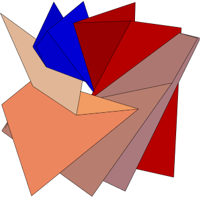

My research interests are in the field of geometric structures on manifolds and discrete subgroups of Lie groups. I am particularly interested in
affine and hyperbolic geometry, and their interplay. My current projects involve constructing proper affine
deformations of quasi-Fuchsian representations of free groups. The tool I use most often to study them
is the Margulis invariant. If you would like to read more about my past and current research, as well as some future directions I find interesting, you can find my research statement here.
1. Constructing proper affine actions via higher strip deformations. ArXiv
In addition to internal talks in the Junior Topology and Junior Geometry seminars and outreach talks, I have given a few talks outside of UT.
1. September 2023, Diverse Aspects of Groups, Geometry and Dynamics, Heidelberg University. Constructing proper affine actions.
2. December 2022, University of Maryland Geometry-Topology seminar, University of Maryland.Constructing proper affine actions via higher strip deformations.
3. September 2022, University of Virginia Geometry seminar, University of Virginia. Constructing proper affine actions via higher strip deformations.
4. September 2022, Nearly carbon neutral geometric topology conference, Anosov representations group. Constructing proper affine actions via higher strip deformations.
5. July 2022, GT GAPS. Constructing proper affine actions.
6. June 2022, lightning talk at Geometry, Arithmetic, and Groups, UT Austin. Proper affine actions of free groups.
7. April 2022, poster presentation at Graduate student topology and geometry conference, Georgia Tech. Constructing proper affine actions of Fuchsian groups.
8. February 2022, contributed talk at TWIMS 2022, Rice. Constructing proper affine actions.
9. October 2021, SAG Seminar, The University of Sherbrooke. Constructing proper affine actions.
10. May 2021, contributed talk at GTA Philadelphia. Constructing proper affine actions.
11. April 2021, contributed talk at Graduate student topology and geometry conference. Constructing proper affine actions.